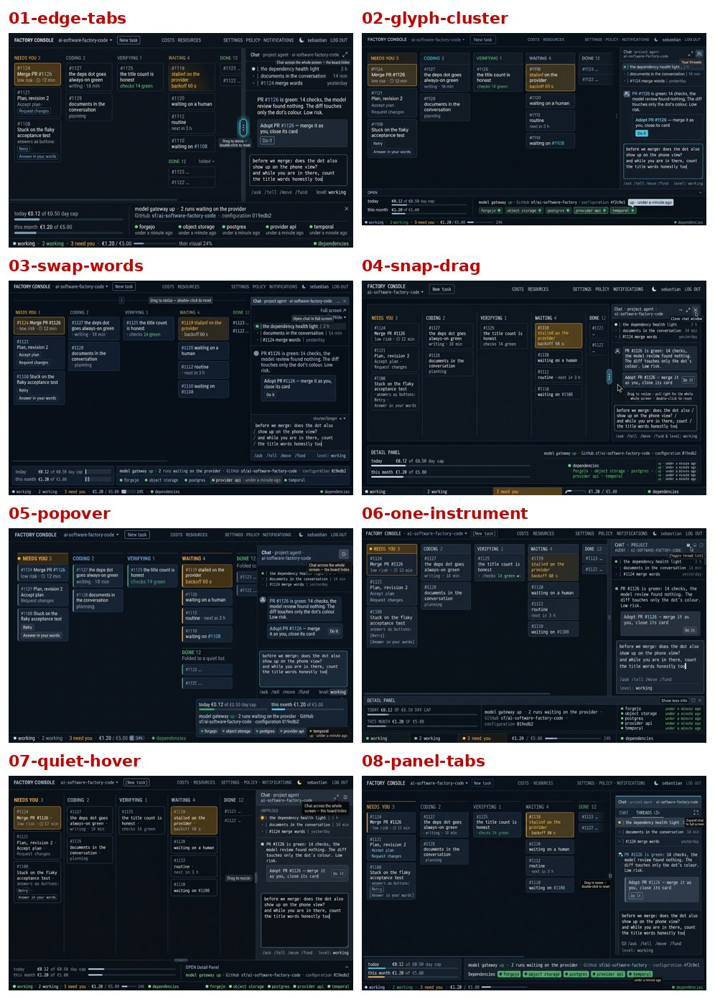
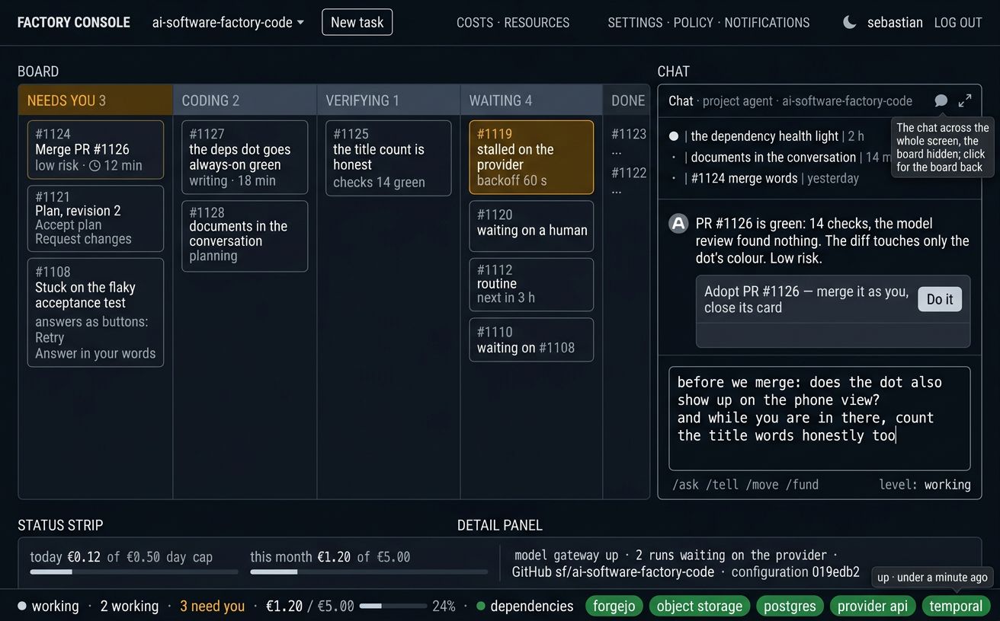
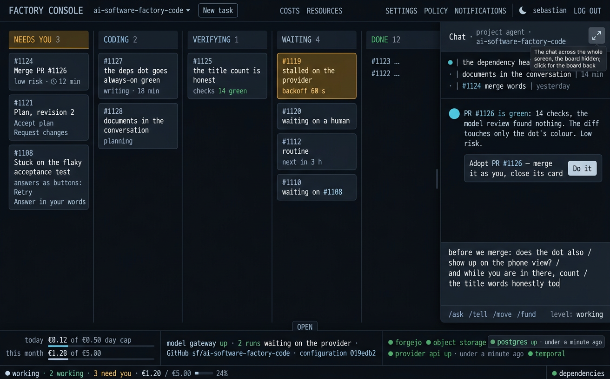
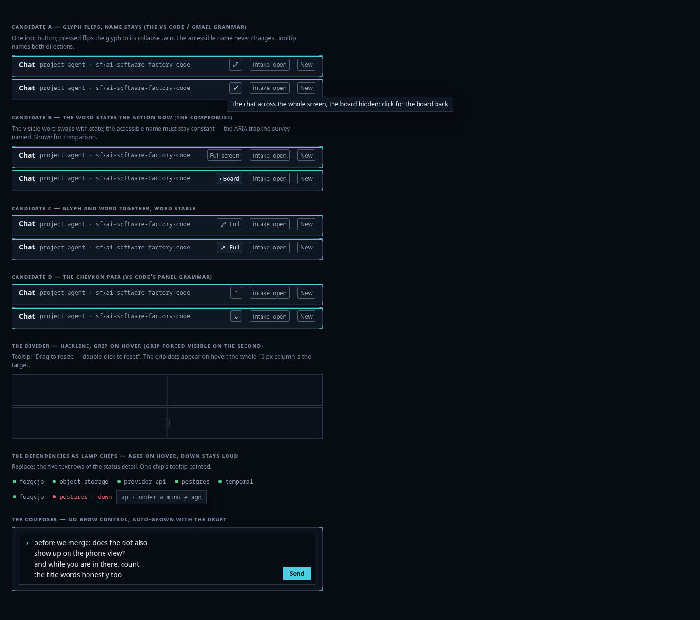
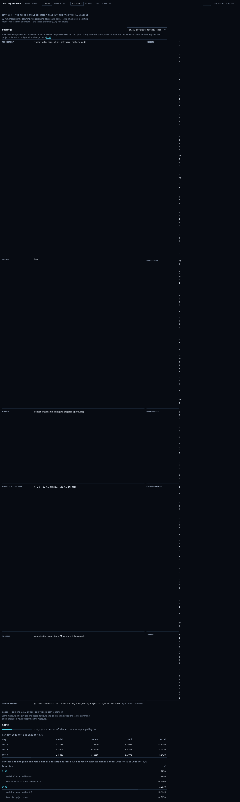

Round 10 — the compact screen
The pick request. Main view: 02r glyph-cluster (recommended) or 06r one-instrument. Window control: A, the glyph that flips (recommended) or C, glyph plus the word.
"provider ok", answered from the code
provider in the panel counts this project's cards that are running whose newest timeline step is provider_refused with no later session start or hold (onProvider, board.go:680, 2217-2218). "provider ok" = no run is stalled waiting on the model provider (a 429/backoff refusal). It is not a connectivity probe. The probe is the dependency "provider api" (dephealth.go, p.Control.Probe) two rows below: another "provider" meaning something else, side by side. The strip already carries the nonzero state ("N waiting on the provider"); the panel's "ok" restates the zero state next to a different provider. The round folds this: the stalled count stays as a warn lamp, the bare "ok" row goes.
The eight directions
| # | name | the idea |
|---|---|---|
| 1 | edge-tabs | the controls ride the divider edge; ⤢ glyph in the head; no grow button |
| 2 | glyph-cluster | an editor-style icon cluster in the chat head; ghost board edge when full |
| 3 | swap-words | the word states the action now: "Full screen" ↔ "‹ Board" |
| 4 | snap-drag | no full button: drag past 80% snaps full; "‹ BOARD" tab clings left |
| 5 | popover | the status detail becomes a popover docked at the strip's right end |
| 6 | one-instrument | the notifications lamp language takes over the whole screen |
| 7 | quiet-hover | nothing visible at rest; controls appear on hover |
| 8 | panel-tabs | the chat becomes a tabbed panel: CHAT | THREADS |
Each drawn at 1440 in dark and light, the same busy content throughout: five board columns, the thread list unfolded, a four-line draft being typed, the strip with its detail open. Full set in cand/; the sheets below.

Products survey
VS Code's toggle-in-place is the model: one glyph button, the glyph flips to its collapse twin when pressed, the tooltip names both directions, aria-pressed carries the state, Esc also exits. Gmail's ⤢ diagonal arrows is the accepted "grow this surface" glyph. The composer market settled long ago: auto-grow with typing up to a cap, then scroll inside. Status pages keep per-service rows while actionable; menubar monitors show one lamp with detail on hover. A strip wants the menubar form. Material 3 and the ARIA APG agree: icon-only controls need tooltips, and a toggle's accessible name should not change when its state changes. Details and sources: references.md.
Critics, breadth pass
| rank | gemini-2.5-pro | glm-5v-turbo |
|---|---|---|
| 1 | 06 one-instrument | 06 one-instrument |
| 2 | 04 snap-drag | 04 snap-drag |
| 3 | 02 glyph-cluster | 02 glyph-cluster |
| 4 | 08 panel-tabs | 08 panel-tabs |
| 5 | 03 swap-words | 01 edge-tabs |
| 6 | 01 edge-tabs | 03 swap-words |
| 7 | 05 popover | 05 popover |
| 8 | 07 quiet-hover | 07 quiet-hover |
Both drop 07 outright (hiding failure signals; light theme unusable) and both would carry 06 + 04.
Director's pixel pass and overrules
- A 4.5-model pre-read of the lab-built control sheet raised four defects; all four overruled at 3× pixels: the collapse glyph is clean SVG (no tofu), the painted tooltip sits on provider api (not postgres), the grip reads as a vertical pill (an accepted drag affordance, and the whole 10 px column is the target), the composer renders intact. The light sheet's "unreadable headings":
--text-faint#5b6678 on near-white measures ≈ 5.5:1, which passes AA. Overruled. - nano-banana garbles service names ("borges" for forgejo in 01) and scatters bracketed pseudo-text in board cards (worst in 08). Tolerable at direction level; pinned exactly in the fix-loop prompts. Not overruled; fixed by construction.
- Gemini's "06's explicit FULL button… flawless craft": the craft holds, but the FULL word button is the incumbent control Sebastian rejected, and 06's composer shows a manual drag handle against the survey's settled auto-grow. Not overruled. Named as the fix loop's main job on 06.
- Both critics' praise of 04's snap-drag sits beside their own flags: "less immediately discoverable" (Gemini), the return "doesn't rely on memory" (GLM). Undiscoverability is Sebastian's own complaint axis. Recorded as the reason 04 does not carry.
Carried two
06 one-instrument (both critics' #1) and 02 glyph-cluster (both critics' #3), overruling the critics' 04 on discoverability grounds. 04 is not lost: its snap-drag and its "‹ BOARD" edge tab merge into both revised directions as secondary affordances.
Fix loop
Revised prompts 06r and 02r: the glyph-flip control replaces every word button (16 px arrows on a 24 px target, the square stays lit when full, tooltip visible naming both directions), the dependencies compress to five lamp chips in one row (never stacked), the composer auto-grows with the four-line draft (no handle, no button), the chat floor is 24 rem with threads unfolded, exact service spellings pinned, no pseudo-text.




Lab-built candidates (what images cannot draw)
cand/controls.html in the console's real stylesheet (code @eb59bac3): four window-control candidates in both states (A glyph flips with a constant name, B the word swaps with state, C glyph + stable word, D the chevron pair), plus the hover-grip divider, the dependency lamp chips with a painted tooltip ("up · under a minute ago"; down stays red and loud), and the auto-grown composer. Shot at 1440 and 390 in both themes.

cand/pages.html: the secondary pages rebuilt. Settings as a readout (small-caps terms, mono identifiers, hairline groups: identity, rules, Forgejo, GitHub export) instead of the ul pseudo-table; Costs with a thin day-cap gauge; both inside a 62 rem measure so the tables stop sprawling at wide windows.

Lab before-run (recorded, not this round's making)
The console lab ran the "before" at code HEAD eb59bac3: 261 shots, check red with 11 findings (tab title not split; busy missing "Two cards need your decision"; busy horizontal scroll at 1440; drawer missing its Chat tab; drawer and docs panels over the chat; busy columns' bodies scrolling sideways; idle/quiet missing status lines; phone targets under 44 px in threads and escalation). No code was touched by this round; the build stage clears these together with the picked design. Sebastian's four before-screenshots: 1 2 3 4.


Compare loop
| critic | 02r glyph-cluster | 06r one-instrument | control pick |
|---|---|---|---|
| gemini-2.5-pro | carry, the recommendation | fails: chips nested in a labeled instrument box; prompt-text leaked under the light composer | C — glyph + stable word |
| glm-5v-turbo | carry, minor fixes | carry, minor fixes | A — glyph flips, constant name |
- Gemini's light-composer pseudo-text in 06r: stands (verified at 3×, a leaked instruction line under the draft).
- Gemini's "instrument box" around 06r's chips: half stands. One hairline container does wrap them. A judgment, recorded as a build fix: chips sit directly in the panel row-set.
- Gemini's Costs header misalignment: overruled. Pixels show the
.numcolumns right-aligned under their headers (console.css:1244), and the headers it quoted do not exist in the sheet. - GLM's "Send button contradicts no-button": overruled. The no-button rule retired the Grow control, not Send; sending stays.
- GLM's circle-vs-square lamps: stands as a build note. nano-banana drew dots where the spec said squares; the build uses the lamp language's shape.
- GLM's "Settings uses sentence case": overruled. It read the strip's mono readout line (sentence case by C24's design); the Settings terms render small-caps in the sheet.
Recommendation
02r glyph-cluster as the main view, 06r one-instrument as runner-up. 02r wins the compare on both cards (Gemini's outright recommendation; GLM's carry with only cosmetic fixes), it is the direction closest to the products survey's settled grammar, and its failures are generator cosmetics, not structure. 06r's maximalism is one container and one prompt leak from equal; the parts worth keeping (square lamps on the strip's cells) fold into 02r's build.
Control candidate A, the glyph flips, the accessible name never changes: the VS Code/Gmail grammar, both critics' ARIA-safe set, GLM's pick. C (glyph + the word "Full") is the recorded fallback if the glyph alone reads too quiet in daily use, but it keeps the very word Sebastian called unclear. B fails the ARIA name-stability rule. D's chevrons say "collapse a panel", not "take the screen".
The secondary pages (Settings readout, Costs gauge, 62 rem measure) pass both critics unopposed and join the build as-is.
The build also inherits, recorded: the lab before-run's 11 findings; square lamp shapes; chips without the wrapper box; the "waiting on the provider" warn cell survives and the bare "provider ok" row goes; Esc exits full chat as a second way back; tooltips on every non-obvious control (the divider's drag, the intake, the thread glyph, the lamps' ages).
Cost
$2.88 generation (20 images) + $0.12 critics (6 runs) ≈ $3.00 of the $8 cap. Round time: one session, 2026-10-19.